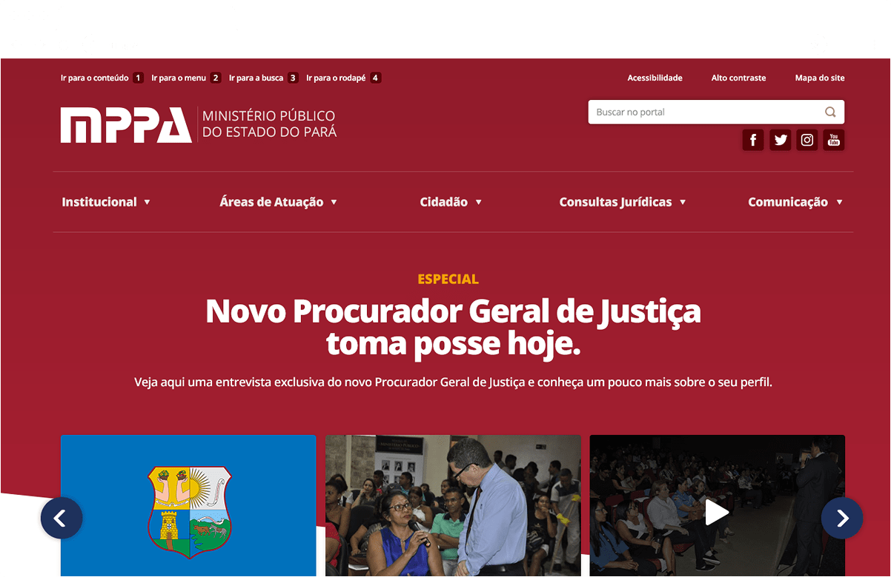
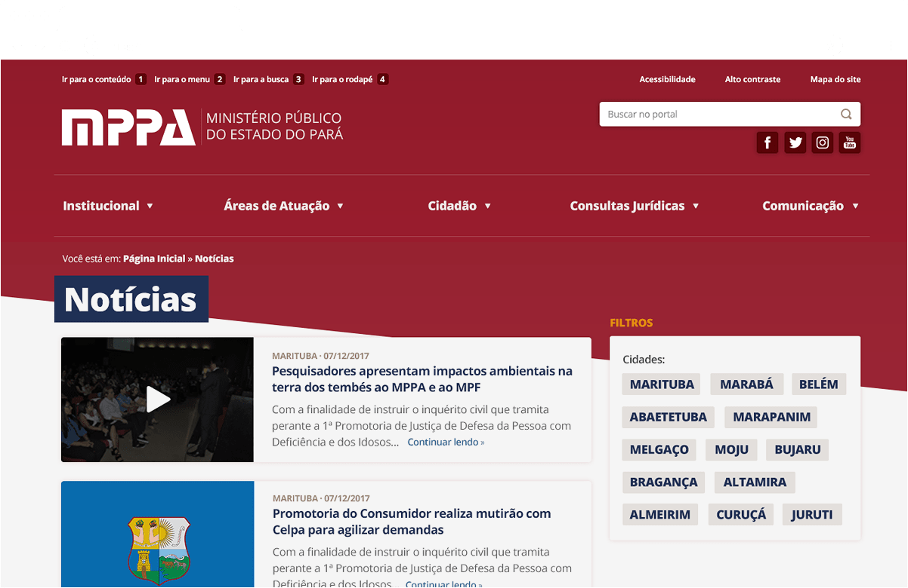
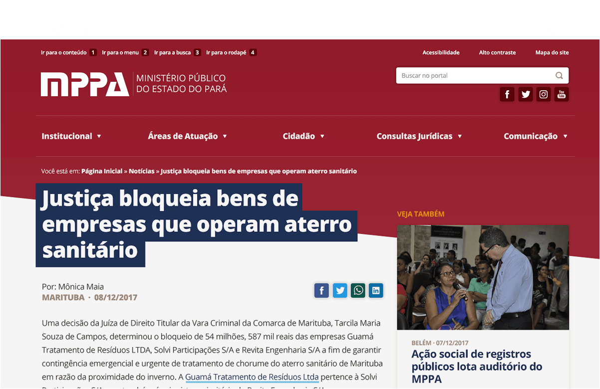
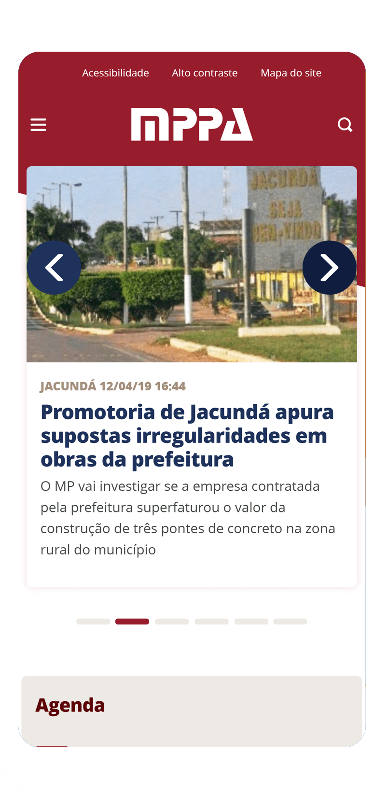

<div class="modal__wrapper">
<div class="modal__scroller">
<div class="modal__header">
<h2 class="modal__title">MPPA</h2>
<h3 class="modal__tags">
<span class="modal__tag">UX/UI</span>
<span class="modal__tag">Front End</span>
</h3>
</div>
<div class="modal__content">
<div class="modal__editable">
<p>
The Public Ministry of Para is a governmental office that acts for social interests of the population of Para, one of Brazil's states. I went to the north of Brazil to understand what tone they wanted for their new online presence and ended up with a modern and responsive site that was conceptualized to evoke the state's flag.
</p>
<p>I made all the design and front end development, taking acessibility issues to heart, making this state's Public Ministry website the best ranked in this category in all the country, according to Google's Lighthouse Index.</p>
<p>You can check this project live on: <a href="https://www.mppa.mp.br/" target="_blank">www.mppa.mp.br</a></p>
<figure class="modal__image--full">

</figure>
<figure class="modal__image--full">

</figure>
<figure class="modal__image--full">

</figure>
<figure class="modal__image--small">

</figure>
</div>
</div>
</div>
</div>
